NEWS
Young Thug Reacts to Gunna’s Tattoo Cover-Up
May 19, 2025

Young Thug addresses Gunna’s decision to cover his YSL tattoo with a lighthearted yet pointed comment, “I mean.. he said it must end lol.” The remark fuels ongoing speculation about their strained relationship, captivating fans and sparking debates.
Kanye’s South Korea Listening Party Canceled
May 18, 2025

Kanye West’s highly anticipated album listening party in South Korea has been officially canceled amid recent controversies. The decision leaves fans disappointed but underscores Ye’s polarizing presence in the music industry.
Drake Taps Kai Cenat for Music Video
May 17, 2025
Drake recruits streamer Kai Cenat to direct a music video for a track from his new album, following Cenat’s critique of the ‘NOKIA’ video. The collaboration signals Drake’s embrace of new creative voices in his visual storytelling.
Gunna Announces New Album for June 2025
May 17, 2025

Gunna teases a new album set for release in June 2025, igniting excitement among fans. With his signature melodic flow and trap-infused sound, the project promises to solidify his comeback in the hip-hop scene.
PinkPantheress’ ‘Fancy That’ Sells 13K First Week
May 17, 2025

PinkPantheress’ ‘Fancy That’ mixtape debuts with an impressive 13K units sold in its first week, showcasing her growing influence. The project’s nostalgic yet innovative sound continues to captivate a global audience.
Tyler, The Creator’s ‘IGOR’ Turns 6
May 17, 2025

Tyler, The Creator’s seminal album ‘IGOR’ celebrates its 6th anniversary, reflecting its lasting impact on hip-hop and pop culture. The project’s genre-defying sound continues to inspire artists and resonate with fans.
Latto Drops New Single ‘Somebody’
May 16, 2025
Latto unleashes her latest single ‘Somebody,’ a bold anthem that blends her fiery lyricism with infectious energy. The track solidifies her status as a leading voice in contemporary hip-hop, thrilling fans worldwide.
Tiacorine Releases ‘Ironic’ with Kenny Beats
May 16, 2025
Tiacorine teams up with Kenny Beats for her new single ‘Ironic,’ delivering sharp bars and dynamic production. The track’s bold energy marks her as a rising star to watch in 2025.
Aminé Drops ‘13 Months of Sunshine’ Album
May 16, 2025
Aminé releases his vibrant new album ‘13 Months of Sunshine,’ blending introspective lyricism with colorful production. The project cements his reputation for pushing creative boundaries in hip-hop and beyond.
Snoop Dogg Disses Suge Knight on New Album
May 15, 2025

Snoop Dogg takes aim at Suge Knight on his new album ‘Iz It a Crime?,’ with pointed lyrics about their past. Lines like “I bought everything you own” and “Now you in PC snitching on the phone” stir controversy and revisit their storied history.
Future’s ‘High Off Life’ Turns 5
May 15, 2025

Future’s iconic album ‘High Off Life’ celebrates its 5th anniversary, highlighting its enduring influence on trap music. The project’s star-studded features and chart-topping hits continue to resonate with fans.
Adin Ross Loses Brand Deals Over Doechii Comments
May 14, 2025
Streamer Adin Ross faces backlash after controversial comments about Doechii, leading to the loss of major brand deals. The incident sparks discussions about accountability in the influencer space.
JID Drops ‘WRK’ Music Video
May 14, 2025
JID releases the music video for ‘WRK,’ a visually striking complement to his lyrical prowess. The video’s cinematic quality amplifies anticipation for his upcoming album, showcasing his storytelling mastery.
J. Cole’s ‘The Off-Season’ Turns 4
May 14, 2025
J. Cole’s ‘The Off-Season’ marks its 4th anniversary, celebrated for its introspective bars and polished production. The album remains a fan favorite, solidifying Cole’s legacy in hip-hop.
André 3000 Honored with Berklee Doctorate
May 13, 2025
André 3000 receives an honorary doctorate from Berklee College of Music, delivering an inspiring speech to the Class of 2025. His forward-thinking vision, reflected in his “3000” moniker, resonates with aspiring artists.
Happy 48th Birthday to Pusha T
May 13, 2025
Pusha T celebrates his 48th birthday, with fans honoring his razor-sharp lyricism and influential career. The Clipse rapper continues to shape hip-hop with his timeless style and upcoming projects.
Kendrick Lamar’s ‘Mr. Morale’ Turns 3
May 13, 2025
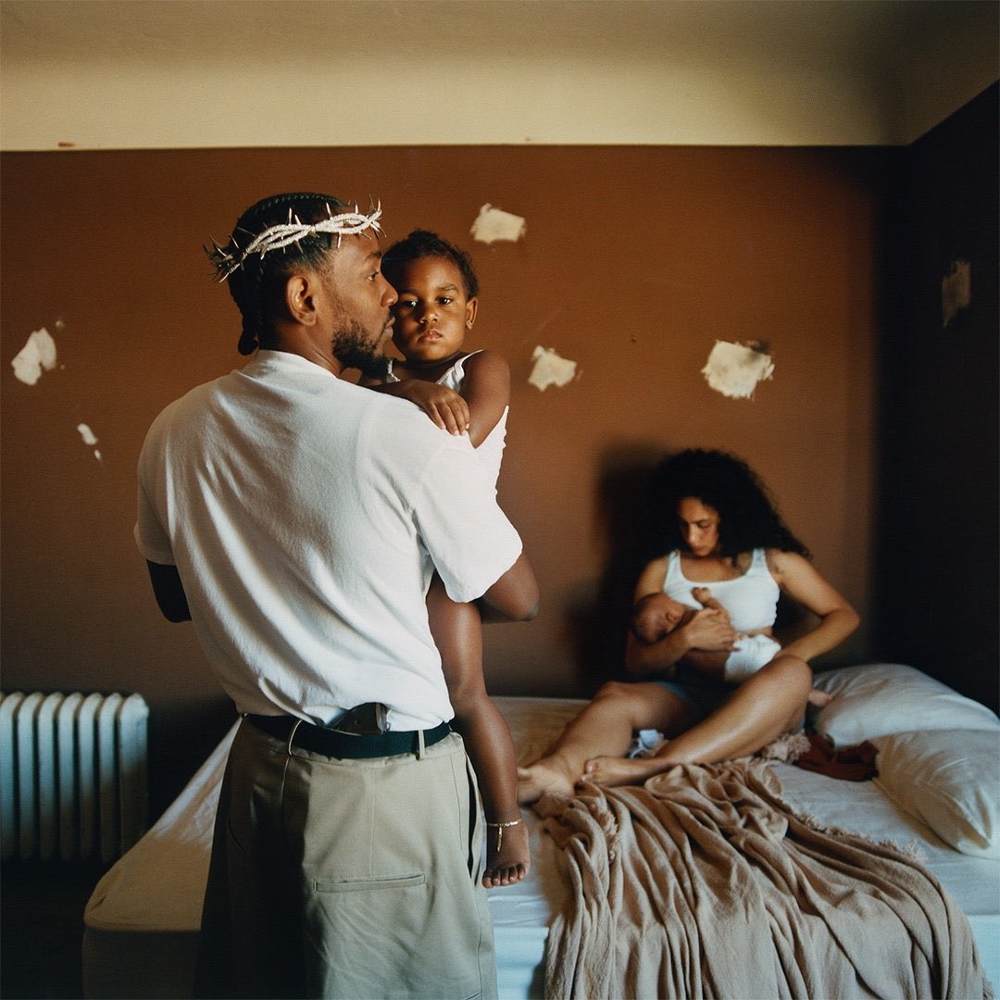
Kendrick Lamar’s ‘Mr. Morale & The Big Steppers’ celebrates its 3rd anniversary, lauded for its introspective storytelling and genre-pushing sound. The album remains a cultural touchstone in modern hip-hop.
Lil Yachty Drops ‘The Concrete Leak System’
May 12, 2025
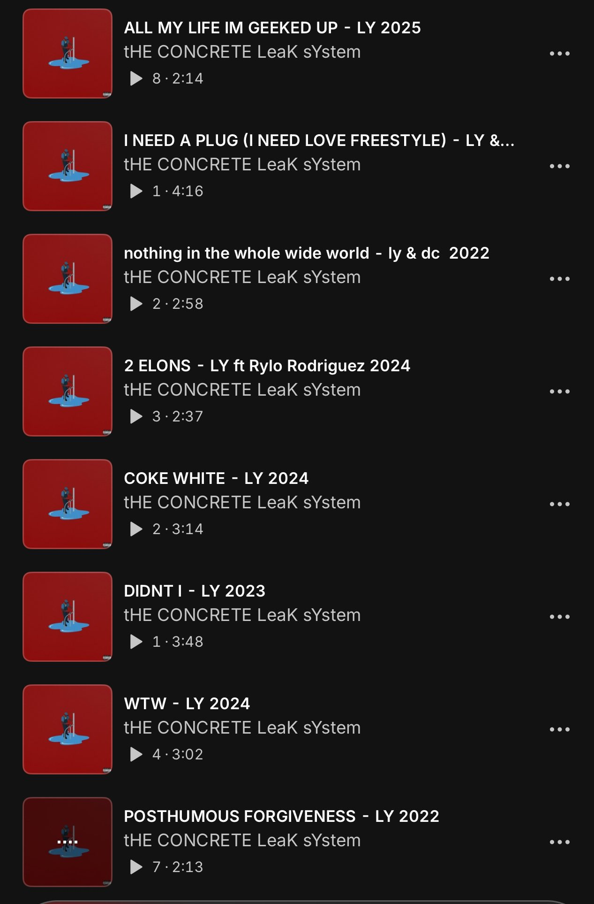
Lil Yachty unleashes ‘The Concrete Leak System,’ a 9-song project showcasing his genre-blending versatility. The release cements his status as a creative force, thrilling fans with its bold experimentation.
Tory Lanez Recovering After Attack
May 12, 2025
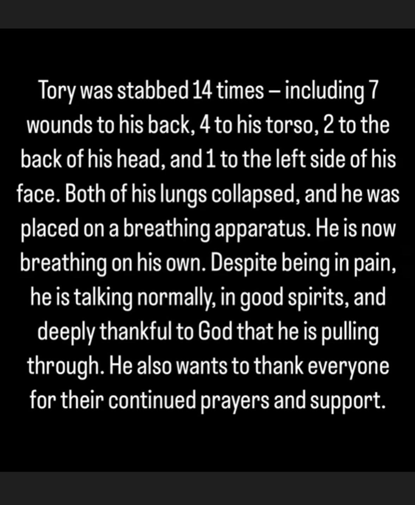
Tory Lanez’s team provides a sobering update on his condition after a brutal attack, revealing he suffered 14 stab wounds, including to his back and head. Now breathing independently, Lanez is on a slow but hopeful road to recovery.
PinkPantheress Covers PAPER Magazine
May 12, 2025
PinkPantheress graces the cover of PAPER Magazine, spotlighting her meteoric rise in music and fashion. Her unique aesthetic and innovative sound continue to redefine pop and hip-hop for a new generation.
Mac Miller’s ‘FACES’ Turns 11
May 11, 2025
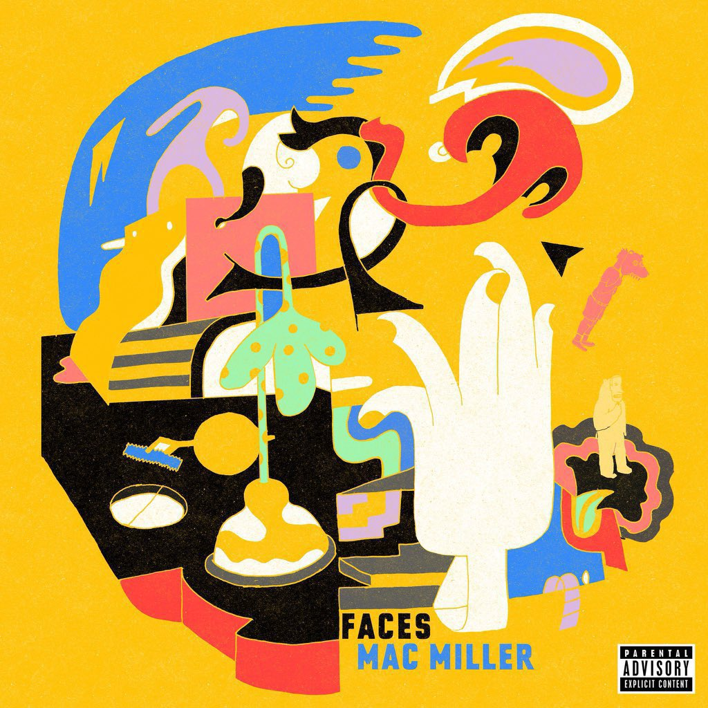
Mac Miller’s beloved mixtape ‘FACES’ celebrates its 11th anniversary, cherished for its raw introspection and eclectic production. The project remains a cornerstone of Miller’s enduring legacy in hip-hop.
Travis Scott Celebrates Barcelona’s El Clásico Win
May 11, 2025
Travis Scott rejoices as FC Barcelona, donning his Cactus Jack collab kits, triumphs over Real Madrid in El Clásico. The victory amplifies his groundbreaking fusion of music, sports, and streetwear culture.
Dave Teases New Album for 2025
May 10, 2025
British rap sensation Dave has fans buzzing with excitement after announcing his upcoming 2025 album, stating, "I'm just finishing this album and then it's on. This year it's gonna be with you." The project promises to deliver his signature introspective lyricism and cinematic production, further solidifying his place in global hip-hop.
PinkPantheress Praises Kendrick’s ‘To Pimp A Butterfly’
May 10, 2025
PinkPantheress reveals her deep admiration for Kendrick Lamar’s ‘To Pimp A Butterfly,’ calling it her all-time favorite album. She credits its powerful storytelling and social commentary, particularly on tracks like ‘Mortal Man,’ for inspiring her own artistry, noting she revisits the album weekly for its profound impact.
Kali Uchis Drops ‘Sincerely’ Album
May 9, 2025
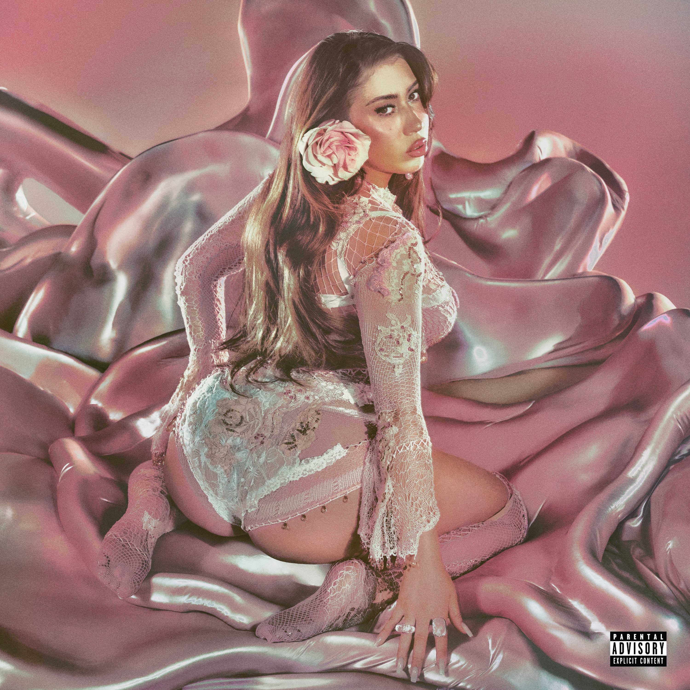
Kali Uchis unveils her latest masterpiece, ‘Sincerely,’ a sonically cohesive project that blends her signature dreamy R&B with vibrant Latin influences. Describing it as her most unified work yet, she also teases a deluxe edition featuring Spanish-language tracks, exciting fans worldwide.
Russ Releases New Single ‘Crazy’
May 9, 2025
Russ ignites the airwaves with his latest single ‘Crazy,’ a bold and introspective track that showcases his lyrical prowess and DIY ethos. The release cements his reputation as a consistent hitmaker, with fans praising its raw energy and emotional depth.
Travis Scott’s ‘Jackboys 2’ Nears Release
May 8, 2025
Travis Scott and Cactus Jack are gearing up for the highly anticipated ‘Jackboys 2,’ with a new teaser amplifying excitement. Promising a boundary-pushing sound, the project is set to elevate the collective’s legacy with explosive collaborations and innovative production.
Rick Ross Open to Ending Drake Feud
May 8, 2025
Rick Ross hints at reconciling with Drake, suggesting a bottle of Belaire could seal the deal. His lighthearted comment about taking a photo together sparks hope among fans for a resolution to their ongoing rivalry, adding a new chapter to their dynamic.
Clipse Drops New Snippet with Pharrell
May 7, 2025
Clipse reignites anticipation with a fiery new snippet produced by Pharrell, showcasing their timeless chemistry. The track’s gritty bars and innovative beats hint at a triumphant return, thrilling fans eager for the duo’s next chapter.
Drake, Young Thug, & 21 Savage Hit Streaming Milestone
May 7, 2025
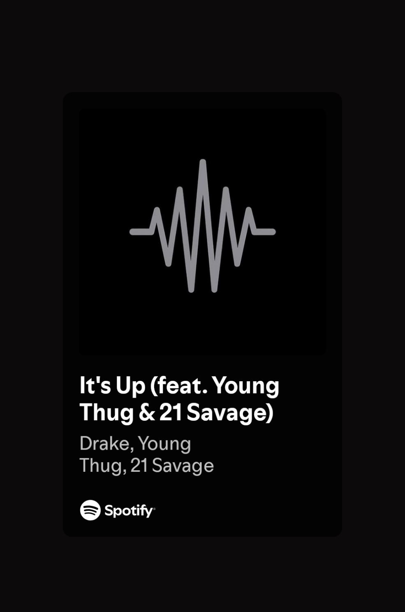
The powerhouse collab ‘It’s Up’ by Drake, Young Thug, and 21 Savage surpasses 100 million Spotify streams, marking Drake’s 273rd song to reach this milestone. The track’s infectious energy cements its place as a 2025 hip-hop anthem.
Playboi Carti Claims Met Gala Ban
May 6, 2025
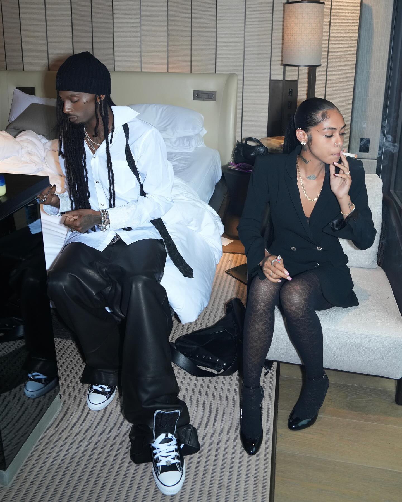
Playboi Carti stirs controversy by claiming he was banned from the Met Gala, comparing it to being “kicked out of prom.” Alongside collaborator Gio, he brushes it off, declaring, “We good,” while fueling buzz about his rebellious persona.
Kanye Storms Out of Piers Morgan Interview
May 6, 2025
Kanye West abruptly exits a Piers Morgan interview just five minutes in, leaving viewers stunned. The walkout adds to Ye’s unpredictable reputation, sparking widespread discussion about his current mindset and media interactions.
A$AP Rocky Teases ‘Don’t Be Dumb’ Album
May 6, 2025
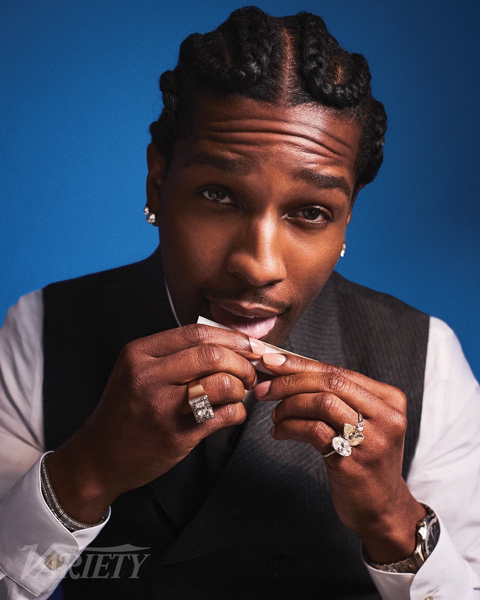
A$AP Rocky builds hype for his upcoming album ‘Don’t Be Dumb,’ describing it as a bold reflection of his current self. With unconventional choices and daring creativity, the project promises to push boundaries and captivate listeners.
Young Thug Announces ‘UY SCUTI’ Album
May 6, 2025
Young Thug unveils plans for his album ‘UY SCUTI,’ slated for a June 2025 release before Summer Smash. The project promises to blend his signature experimental style with fresh collaborations, heightening anticipation among fans.
Future Shines at Met Gala
May 5, 2025
Future turns heads with a show-stopping appearance at the Met Gala, exuding Atlanta flair and commanding attention. His bold fashion choices spark widespread praise, reinforcing his status as a cultural icon in music and style.
A$AP Rocky & Rihanna Expecting Third Child
May 5, 2025
A$AP Rocky and Rihanna share joyful news of expecting their third child, delighting fans with their growing family. The power couple’s announcement adds a personal milestone to their influential presence in music and fashion.
Lil Uzi Vert Teases Summer 2025 Music
May 5, 2025
Lil Uzi Vert sets the stage for a major comeback, teasing new music for Summer 2025 with the cryptic message, “Sayless… we finally FREE.” Fans are buzzing with anticipation for what promises to be a groundbreaking release.
Mariah The Scientist’s ‘Burning Blue’ Hits #2
May 4, 2025
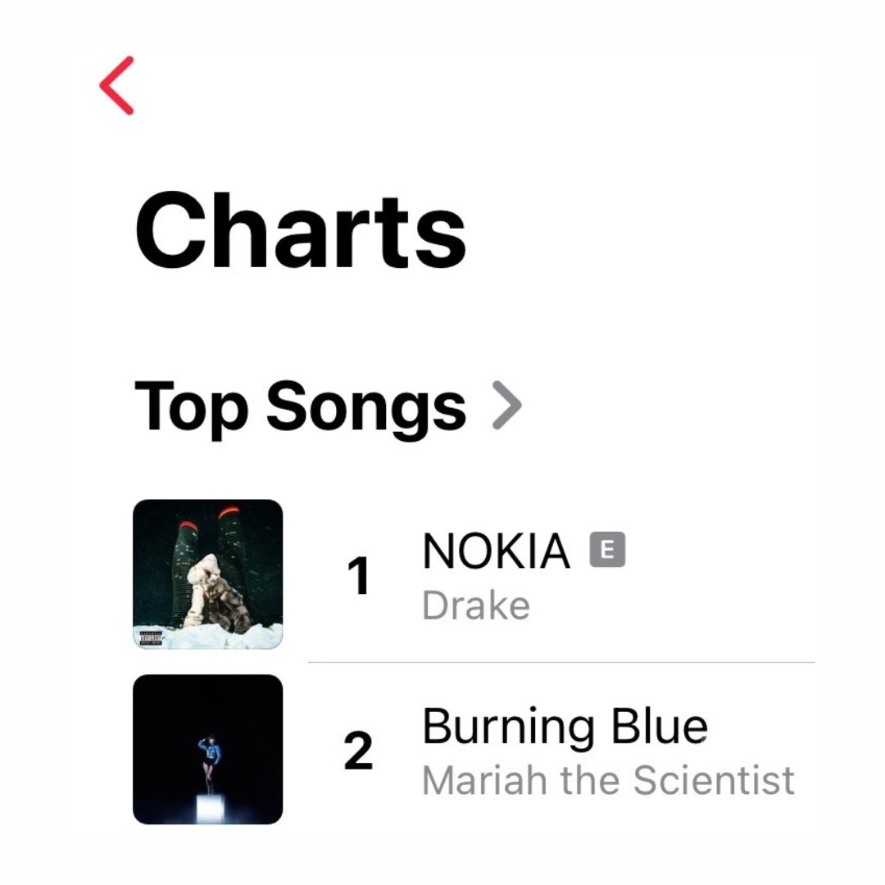
Mariah The Scientist’s ‘Burning Blue’ soars to #2 on US Apple Music, trailing only Drake’s ‘NOKIA.’ The track ties as the highest-charting song by a female artist in 2025, showcasing her rising dominance in R&B.
Travis Scott’s ‘4X4’ Crosses 100 Million Streams
May 3, 2025
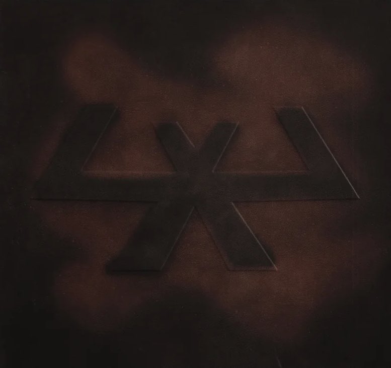
Travis Scott’s ‘4X4’ surpasses 100 million Spotify streams, marking his 133rd song to hit this milestone. The achievement places him as the rapper with the second-most tracks over 100 million, solidifying his streaming supremacy.
Kanye’s ‘DONDA 2’ Posts Strong First Week
May 3, 2025
Kanye West’s ‘DONDA 2’ debuts with 5.9K units sold in its first week, with projections estimating 21K units for a full week. The album’s bold sound continues to captivate fans and spark conversations in hip-hop.
Doechii’s ‘Alligator Bites’ Hits 1 Billion Streams
May 3, 2025
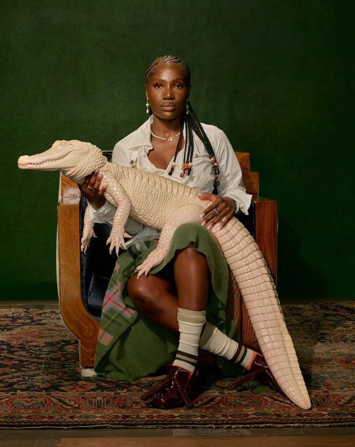
Doechii’s ‘Alligator Bites Never Heal’ crosses a monumental 1 billion Spotify streams, a testament to her rising star power. The project’s raw lyricism and genre-blending sound continue to resonate with fans globally.
Travis Scott Featured on FC Barcelona Jersey
May 2, 2025
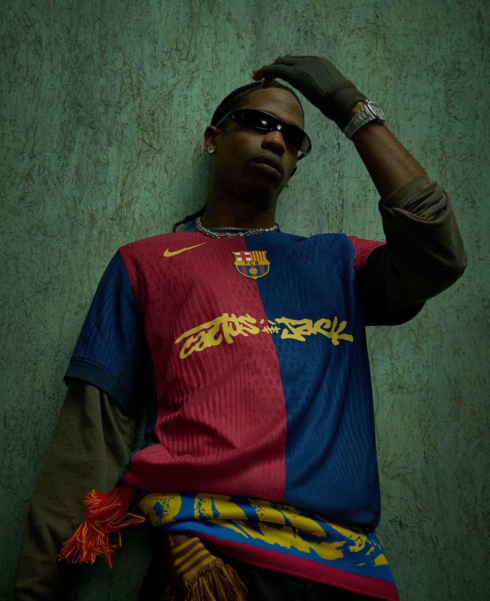
Travis Scott makes history as his Cactus Jack brand is featured on FC Barcelona’s jersey for the El Clásico match against Real Madrid on May 11. The collaboration marks a bold fusion of music, sports, and streetwear culture.
Yeat Covers Drake’s ‘Feel No Wayz’
May 2, 2025
Yeat delivers a high-energy cover of Drake’s ‘Feel No Wayz,’ infusing his signature rage style into the track. The release, tied to their Toronto billboard campaign, amplifies their creative synergy and excites fans.
Mariah The Scientist Drops ‘Burning Blue’
May 2, 2025
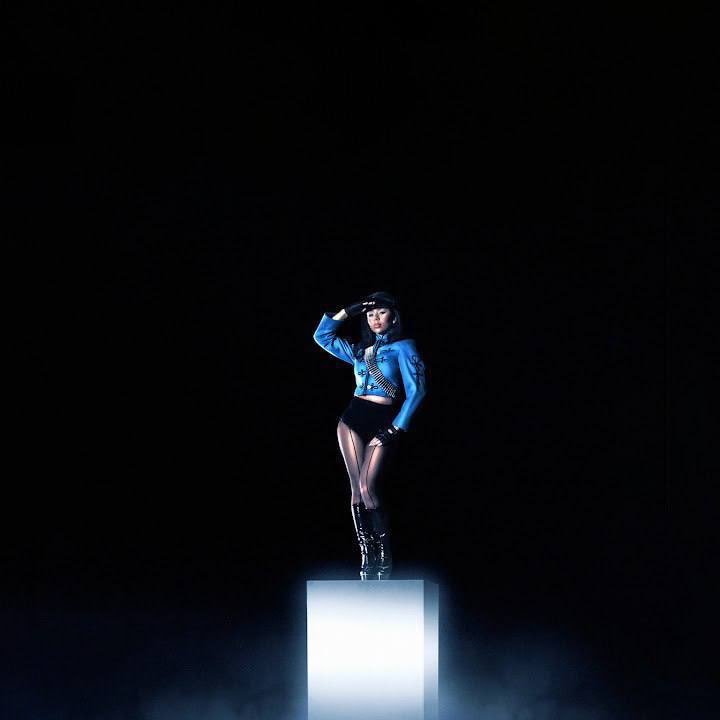
Mariah The Scientist releases her highly anticipated single ‘Burning Blue,’ a soulful anthem that showcases her emotive vocals and storytelling. The track’s immediate buzz signals her growing influence in contemporary R&B.
Travis Scott Signs Wallie The Sensei
May 1, 2025
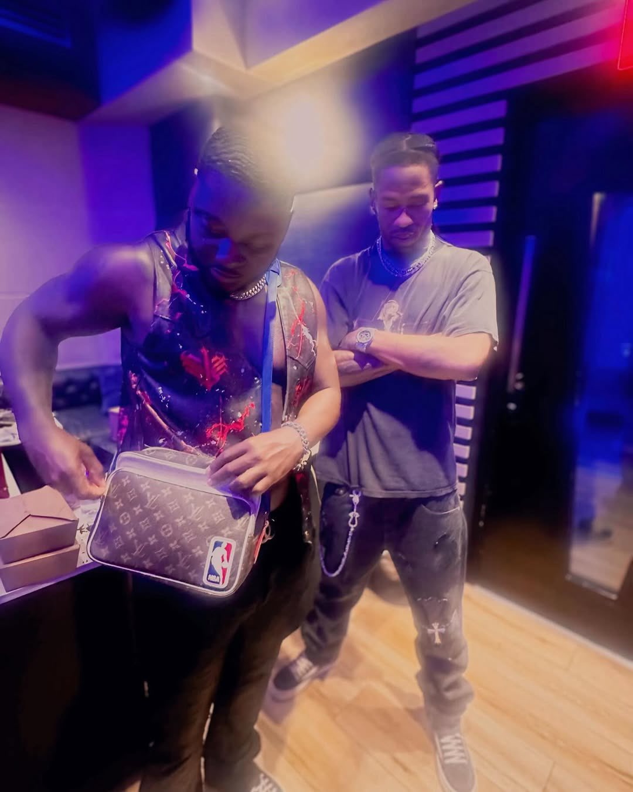
Travis Scott officially welcomes Wallie The Sensei to Cactus Jack, following his standout feature on Kendrick Lamar’s ‘GNX.’ Set to appear on ‘Jackboys 2,’ Wallie’s signing marks a bold expansion of the label’s roster.
Kanye West Disses Kendrick Lamar & J. Cole
April 30, 2025
Kanye West stirs controversy with sharp criticism of Kendrick Lamar and J. Cole, dismissing Cole’s work as “not even music” and questioning Kendrick’s status among rap fans, igniting heated debates across the hip-hop community.
Drake & Yeat’s Toronto Billboard Campaign
April 30, 2025
Drake and Yeat make waves with a massive Toronto billboard promoting their collaboration, featuring Drake’s shoutout, “YOUNG TWIZZZZZZZZY FEEL A WAY.” The bold campaign fuels hype for their joint musical endeavors.
Travis Scott Celebrates 34th Birthday
April 30, 2025
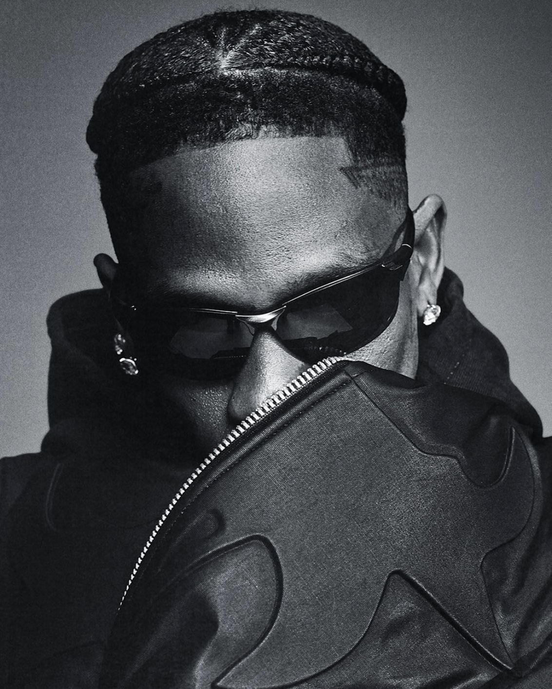
Travis Scott marks his 34th birthday with widespread fan celebrations, as the hip-hop icon continues to dominate with Cactus Jack projects and global influence. The milestone fuels excitement for his upcoming releases.
Beyoncé Features Underground Acts in Tour Visuals
April 29, 2025
Beyoncé amplifies underground talent by incorporating tracks from Westside Gunn, JPEGMAFIA, and Death Grips into her ‘Cowboy Carter’ tour visuals, blending experimental hip-hop with her groundbreaking live production.
Kali Uchis Teases ‘Sincerely’ Album
April 29, 2025
Kali Uchis shares insights on her forthcoming album ‘Sincerely,’ calling it her most cohesive work yet. With plans for a deluxe edition featuring Spanish tracks, she’s poised to captivate fans with her genre-defying sound.
Don Toliver & Doja Cat Drop ‘Lose My Mind’
April 29, 2025
Don Toliver and Doja Cat team up for ‘Lose My Mind,’ a vibrant track from the F1 Album Soundtrack. Their electric chemistry and genre-blending sound create a standout hit, thrilling fans across the board.
LUCKI Previews ‘Drugs R Bad’
April 28, 2025
LUCKI builds anticipation with a gripping snippet for his upcoming project ‘Drugs R Bad,’ showcasing his signature introspective flow and hazy production. The teaser has fans eagerly awaiting the full release.
Kendrick & SZA’s ‘Luther’ Dominates Charts
April 28, 2025
Kendrick Lamar and SZA’s ‘Luther’ holds the #1 spot on the Hot 100 for 10 consecutive weeks, nearing the record for the longest-running #1 rap hit of the 2020s, set by Roddy Ricch’s ‘The Box.’ The track’s cultural impact continues to resonate.
OutKast Inducted into Rock and Roll Hall of Fame
April 27, 2025
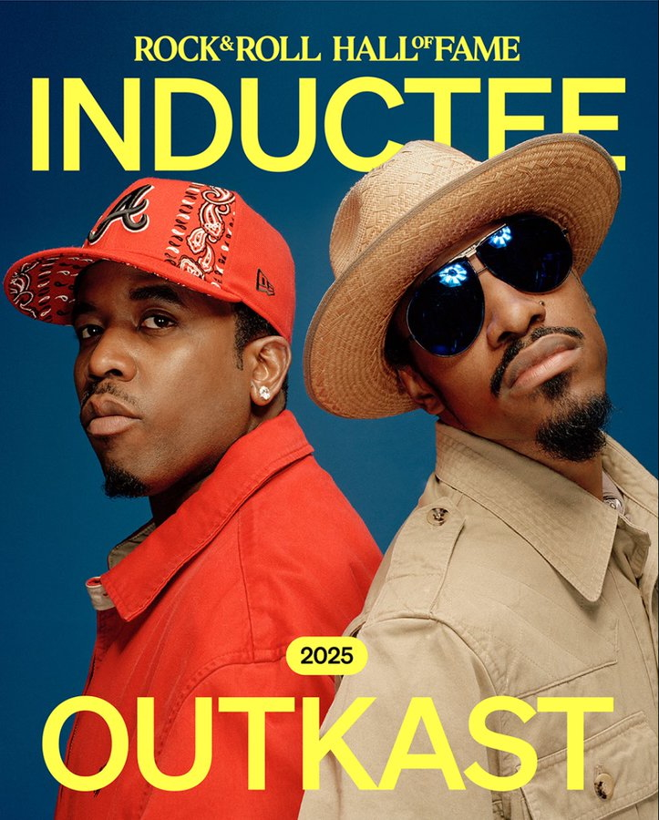
OutKast earns a prestigious induction into the Rock and Roll Hall of Fame, celebrating their groundbreaking contributions to hip-hop. The Atlanta duo’s innovative sound and cultural influence are honored in a historic moment for the genre.
Young Thug Responds to Ye's 'Otis' Nostalgia
April 27, 2025
Young Thug reacts to Kanye West's comment that the 'Otis' homage in the 'Money On Money' video nearly brought back 'Watch The Throne' vibes, saying, "guess we didn't get the job done," sparking buzz about their creative exchange.
NBA YoungBoy Teases New Project
April 26, 2025
NBA YoungBoy hints at an upcoming release with a cryptic Instagram post, stating, "No words #imready," fueling anticipation among fans for his next move in 2025.
Ye Claims 'Blood On The Leaves' Birthed Rage
April 26, 2025
Kanye West declares that his 2013 track 'Blood On The Leaves' pioneered the rage music subgenre, igniting discussions about his influence on modern hip-hop production.
Young Thug & Future's Streaming Success
April 26, 2025
The collaborative track 'Money On Money' by Young Thug and Future racks up an impressive 1.7 million streams on Spotify in its first day, cementing their status as streaming heavyweights.
Drake's Million-Dollar Bet Win
April 26, 2025
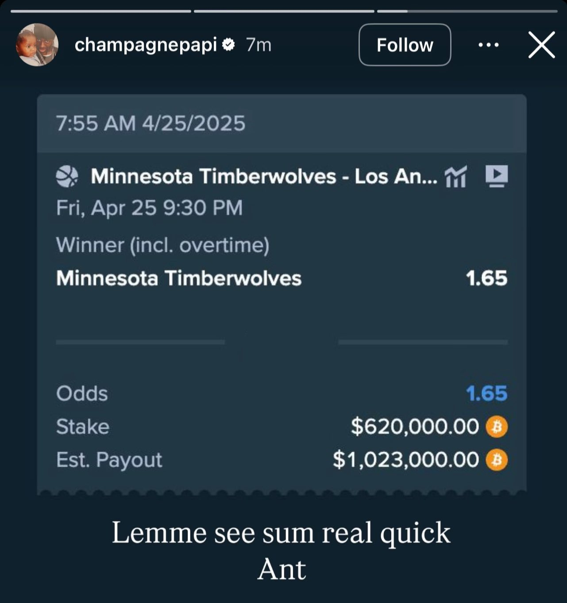
Drake cashes in big, winning a $1,023,000 payout after placing a $620,000 bet on the Timberwolves to defeat the Lakers, showcasing his knack for high-stakes gambling.
Travis Scott Hypes Jackboys 2
April 26, 2025
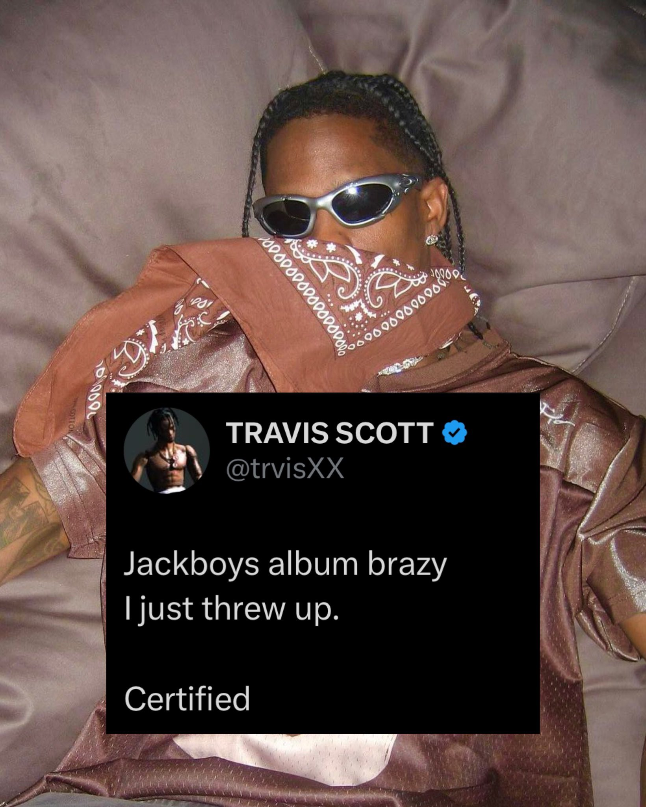
Travis Scott builds excitement for 'Jackboys 2,' describing the upcoming album as "brazy" on social media, hinting at a bold new chapter for the Cactus Jack collective.
Playboi Carti Claps Back at Ye
April 25, 2025
Playboi Carti fires back at Kanye West's criticism, declaring, "I'm the worst enemy to have," escalating tensions in their ongoing creative dispute.
Young Thug Addresses Gunna Relationship
April 25, 2025
Young Thug opens up about his current dynamic with Gunna, saying, "I don’t know," leaving fans speculating about their status amid past tensions.
Ye Disses Playboi Carti's Album
April 25, 2025
Kanye West calls Playboi Carti’s latest album "trash," accuses him of stealing producers, and claims he confronted Carti at a hotel with a gun, stirring major controversy.
PinkPantheress Drops 'Stateside'
April 25, 2025
PinkPantheress releases her highly anticipated project 'Stateside,' captivating fans with her signature blend of nostalgic beats and modern flair.
Young Thug's 'Money On Money' Lyric Stirs Buzz
April 25, 2025
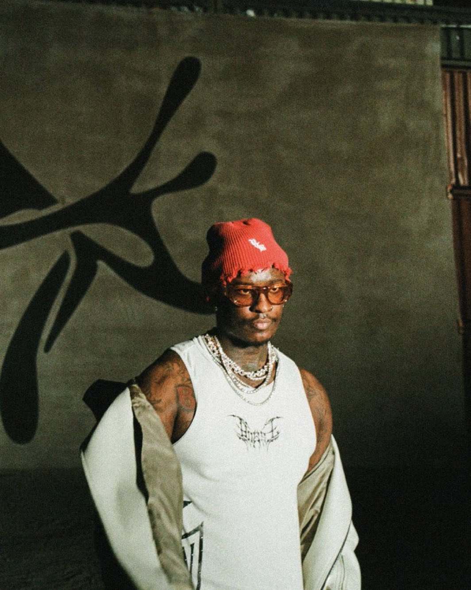
Young Thug’s line, "These f*ck n****s tellin’ for nothin’ and I gotta be the one calling them friends," from 'Money On Money,' sparks speculation about disloyalty in his circle.
Kanye Praises Nettspend's 'Beach Leak'
April 24, 2025
Kanye West endorses Nettspend’s 'Beach Leak,' calling it "fresh," signaling his support for the rising artist’s unique sound.
Young Thug & Future Announce 'Money On Money'
April 23, 2025
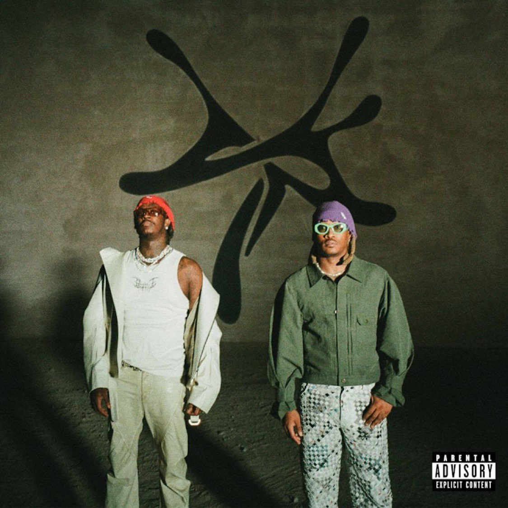
Young Thug and Future tease their upcoming single 'Money On Money,' set to drop soon, promising a high-energy collaboration between two Atlanta legends.
Baby Keem & Kendrick Hit Billion Streams
April 22, 2025
Baby Keem and Kendrick Lamar’s hit 'family ties' crosses 1 billion Spotify streams, marking Keem’s first song to reach this milestone and solidifying their collaborative prowess.
Lil Uzi Vert Hospitalized in NYC
April 22, 2025
Lil Uzi Vert was admitted to a New York City hospital after a medical emergency at a Manhattan hotel, with his condition currently undisclosed, raising concern among fans.
Lil Wayne Reveals Tha Carter VI Cover
April 22, 2025
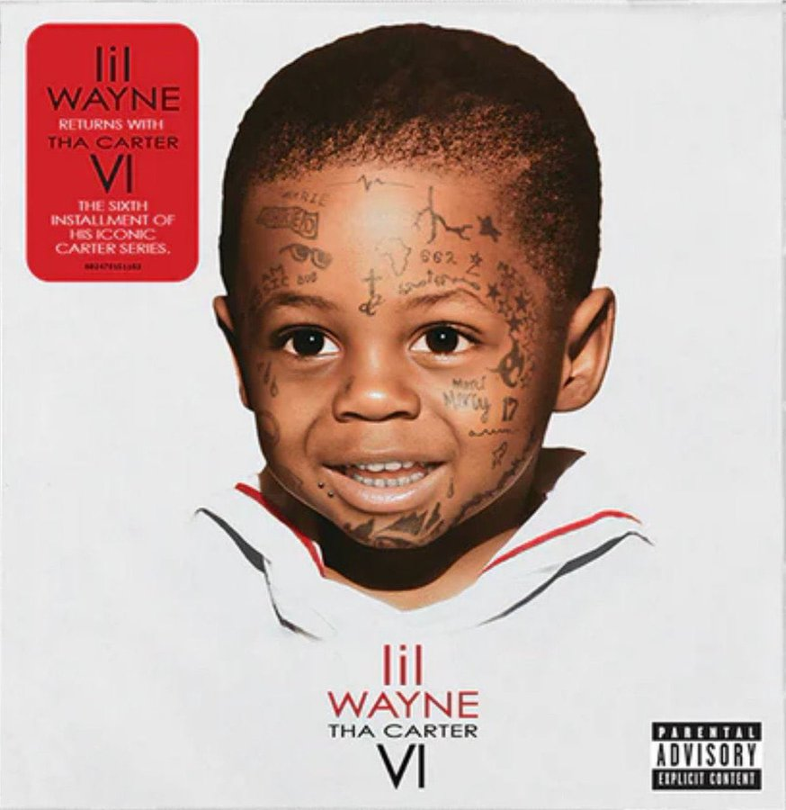
Lil Wayne unveils the official cover art for 'Tha Carter VI,' set for release on June 6, building hype for the next chapter in his iconic series.
Travis Scott Teases Jackboys 2
April 21, 2025
Travis Scott ignites hype for 'Jackboys 2' via Instagram, shouting, "I DONT WANT A RECEIPT I WANT BLOOOODDD" and "AFTER JACKBOYS 2 'I NEEEEEDDD THAT'," hinting at a fierce follow-up.
Kendrick Lamar Named Chanel Brand Ambassador
April 20, 2025
In a groundbreaking move for luxury fashion, Kendrick Lamar has been announced as the newest brand ambassador for Chanel, marking a historic partnership between hip hop and haute couture.
Ken Carson Makes History with More Chaos
April 19, 2025
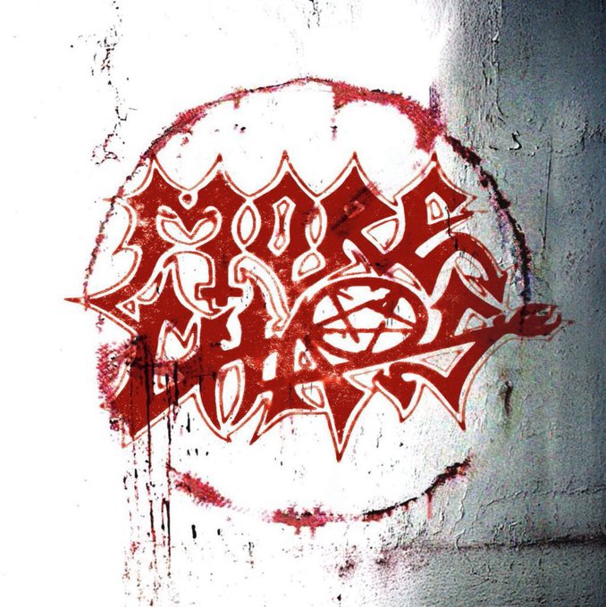
Ken Carson achieves his first career number one album with More Chaos, moving an impressive 59,500 units in its first week, marking a significant milestone in his artistic journey.
Grand National Tour Makes History
April 18, 2025
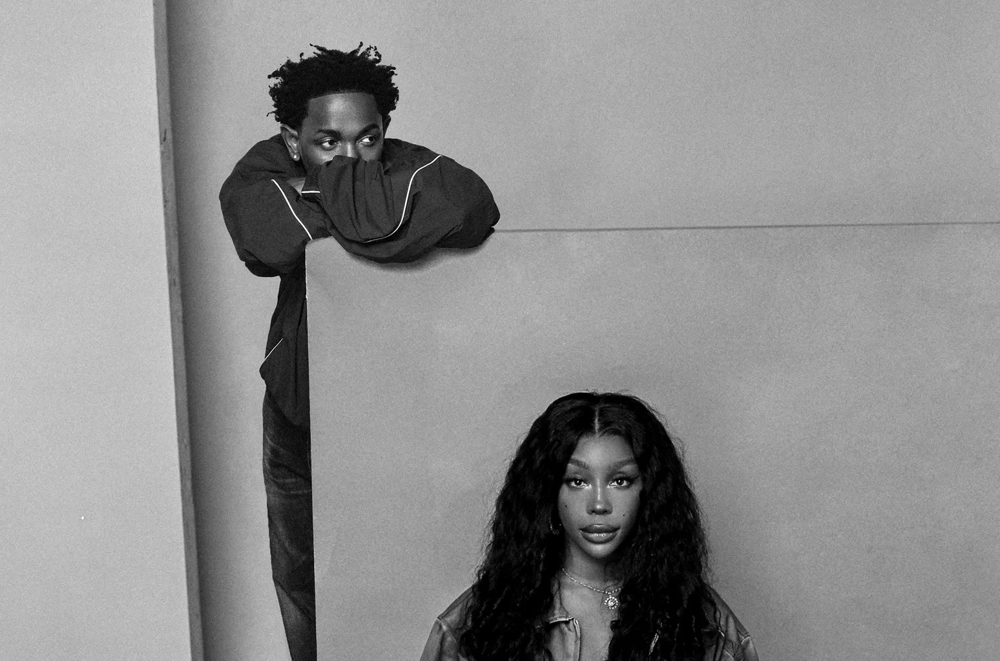
Kendrick Lamar and SZA's Grand National Tour debuts with an epic 51 track setlist, featuring classics and unreleased material including Wacced Out Murals and Gloria, creating an unprecedented live experience.
Drake Reference Sparks Conversation
April 17, 2025
During the Grand National Tour, Kendrick Lamar makes waves by referencing Drake's Drop line before performing Not Like Us, intensifying speculation about their artistic relationship.
Young Thug and Ken Carson Announce Collaboration
April 16, 2025
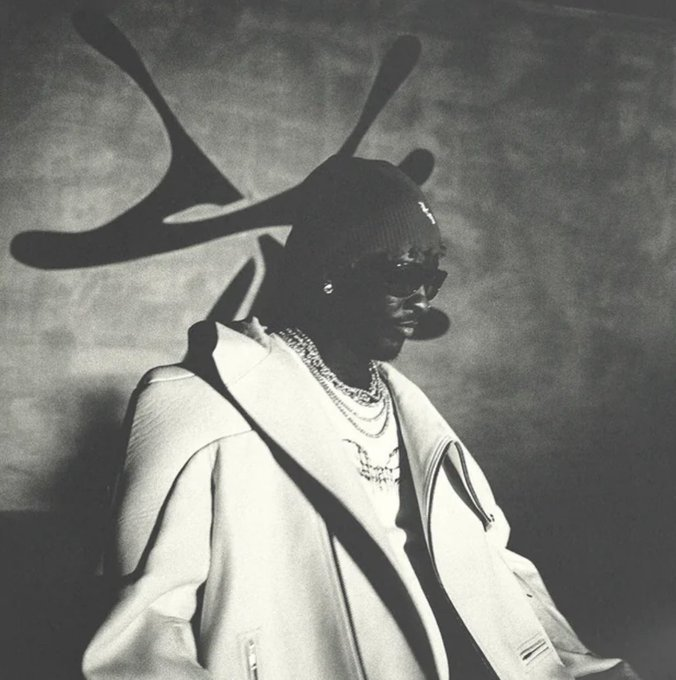
UY SCUTI, a confirmed collaboration between Young Thug and Ken Carson, is set to release in May 2025, promising a unique fusion of their distinctive styles.
JID Announces New Album
April 15, 2025
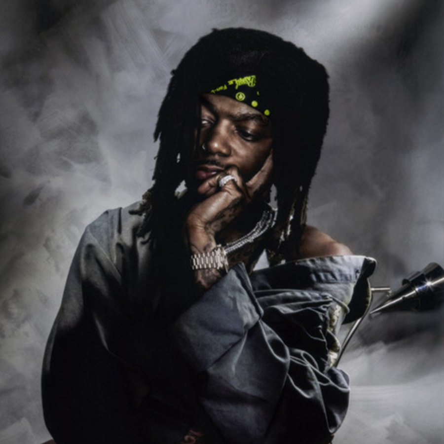
JID reveals his upcoming album God Does Like Ugly, building anticipation for what promises to be another masterclass in technical rap excellence.
Big L Legacy Project Announced
April 14, 2025
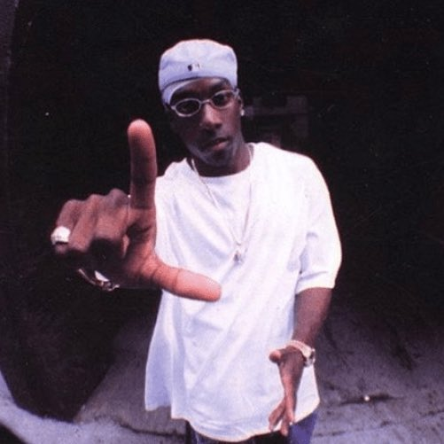
Harlem's Finest: Rise of the Forgotten King, featuring rare freestyles and unreleased material, set for Summer 2025 release with Nas assisting in the project's curation.
Lil Wayne's Star Studded Carter VI
April 13, 2025
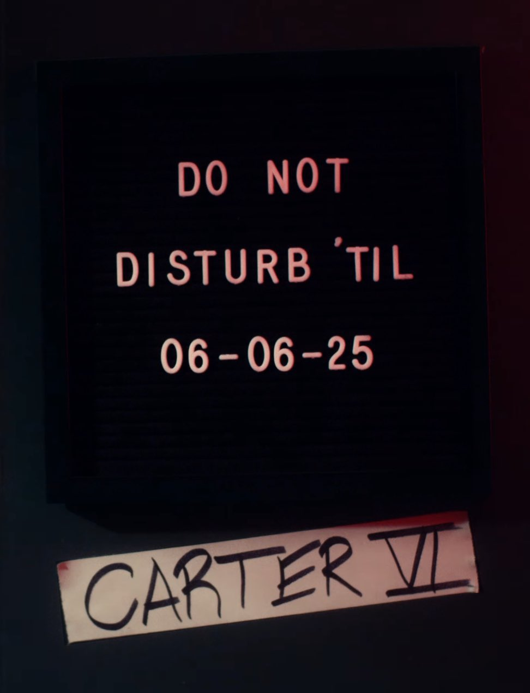
Tha Carter VI features an eclectic lineup including Billie Eilish, Andrea Bocelli, Miley Cyrus, and Wayne's son Kameron Carter, showcasing unprecedented genre crossing collaborations.
Pitchfork Reviews More Chaos
April 12, 2025
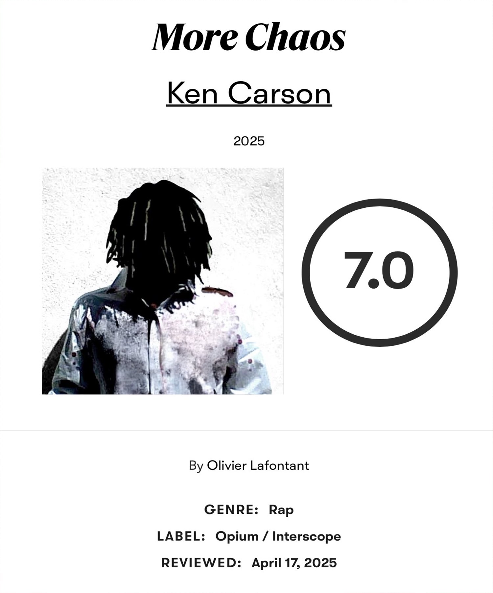
Pitchfork scores Ken Carson's More Chaos a solid 7/10, placing it among notable 2025 releases like Playboi Carti's MUSIC (7.7) and Mac Miller's Balloonerism (7.4).
Mustard's Coachella Statement
April 11, 2025
Mustard creates controversy at Coachella by playing 'Not Like Us' and adding pointed commentary about Drake's recent legal actions.
Kendrick's Streaming Milestone
April 10, 2025
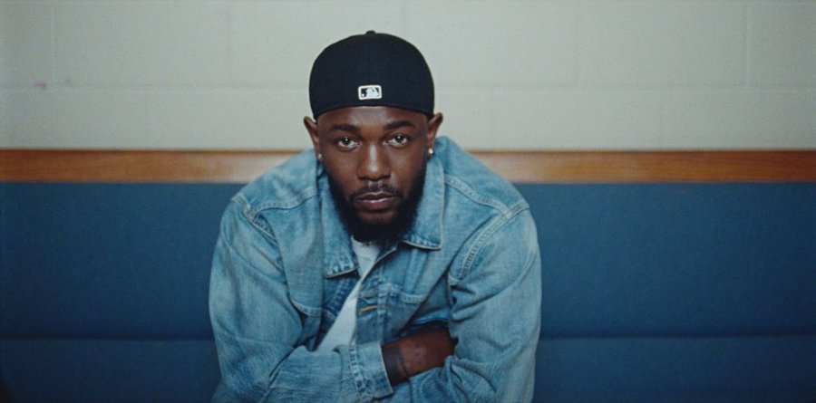
Kendrick Lamar achieves a remarkable milestone by surpassing 5 billion streams on Spotify in 2025, showcasing his continued dominance in hip-hop.
Drake's Record-Breaking Year
April 9, 2025
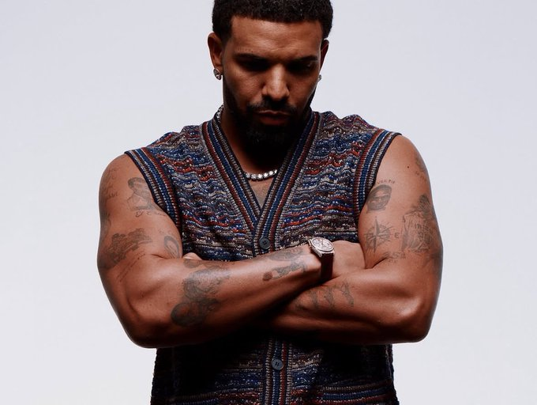
Drake continues his streaming dominance, reaching 5 billion Spotify streams in 2025, maintaining his position as one of music's most streamed artists.
Grand National Tour Sells Out
April 8, 2025
Kendrick Lamar & SZA's Grand National Tour achieves complete sellout status, demonstrating unprecedented demand for their historic collaboration.